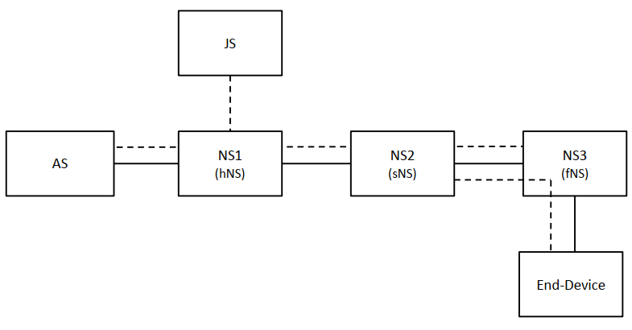
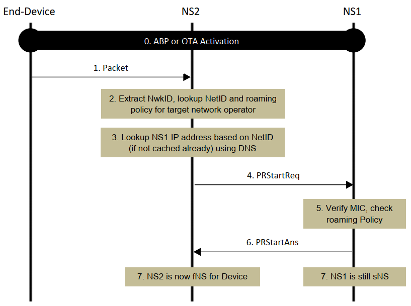
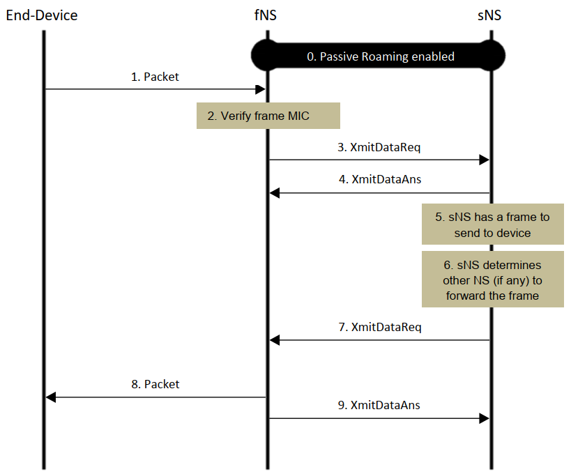
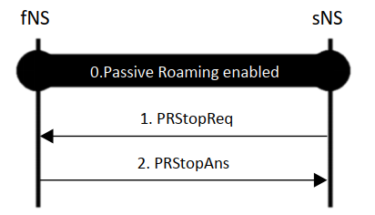
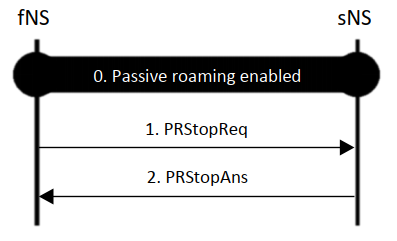
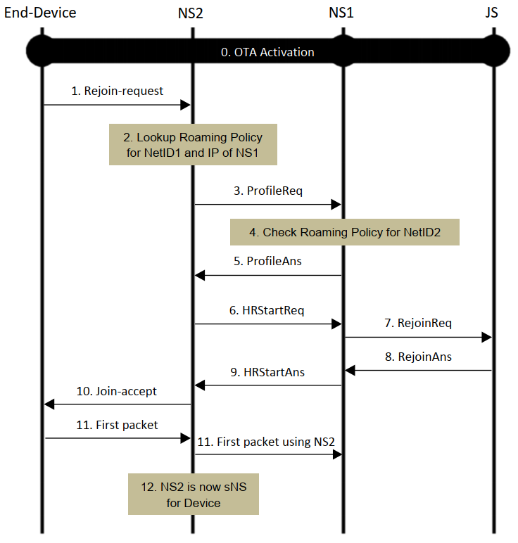

接上一篇。
本部分主要介绍漫游过程。
11. 漫游过程
11.1 漫游类型
有两种 LoRa 漫游类型，名为被动漫游（Passive Roaming）和切换漫游（Handover Roaming）。被动漫游使终端设备能够受益于 NS 的 LoRaWAN 网络服务，处于两个网络的终端设备即使在重叠 RF 功能受限（即信道）范围内在另一个 NS 的控制下使用网关（Gateways）时也能工作。LoRa 会话和终端设备的 MAC 层控制由前 NS 维护，称为 sNS ，而往返于空中接口的帧由后 NS 处理，后者称为 fNS （转发 NS ）。对于给定的 LoRa 会话，只能有一个 sNS，而同一个会话可能涉及零个或多个 fNS 。
有两种类型的 fNS ：有状态和无状态。有状态 fNS 在终端设备的被动漫游开始时创建上下文（context），并利用该上下文来处理相同终端设备的任何后续上行链路/下行链路分组（subsequent）。无状态 fNS 不会创建任何上下文，因此最终必须彼此独立地处理任何上行链路/下行链路分组。假设某个超范围机制漫游伙伴知道给定的 fNS 是无状态还是有状态的。
即使在终端设备执行从一个 NS 到另一个 NS 的切换漫游之后， hNS 仍然使用 JS 和 AS 维护控制平面（control-plane）和数据平面（data-plane）。对于给定 LoRa 会话， hNS 保持不变，直到终端设备执行下一个入网过程。与 fNS 不同， sNS 具有控制终端设备 RF 设置的能力，这允许更灵活的漫游场景。

f6. 使用切换漫游和被动漫游
图 f6 所示，其中切换漫游和被动漫游同时用于 LoRa 会话。这个例子中，终端设备通过 NS1 激活， NS1 充当 hNS。随后，当 NS2 成为 sNS 时，漫游设备执行了从 NS1 到 NS2 的切换漫游，并且当 NS3 成为终端设备的 fNS 时，还从 NS2 到 NS3 进行被动漫游。
漫游激活是终端设备在 vNS 的覆盖范围内激活的能力。
本规范描述了下列漫游情况的过程：
- 正在进行的 LoRa 会话期间的被动漫游
- 正在进行的 LoRa 会话期间的切换漫游
- 基于 hNS 和 vNS 之间的切换漫游，漫游激活新的 LoRa 会话
- 基于 hNS 和 vNS 之间的被动漫游，漫游激活新的 LoRa 会话
当 hNS 和 vNS 没有任何漫游协议时激活新的 LoRa 会话超出了本规范的范围。这包含两种 NS 可能与第三个 NS 签订漫游协议的情况（例如， hNS 和第三个 NS 具有切换漫游协议，第三个 NS 和 vNS 具有被动漫游协议）。
11.2 漫游策略
每个网络运营商（network operator）都应该（SHALL）配置漫游策略，该漫游可以单独允许/禁止被动漫游、切换漫游、基于被动漫游的激活、基于其 NetID 识别的其他网络运营商的基于切换漫游的激活。对于被动漫游，策略还应该（SHALL）包括上行链路 MIC 检查是否由 fNS 完成。
每个网络运营商（network operator）都应该（SHALL）配置漫游策略，该漫游可以允许/禁止被动漫游、切换漫游、基于被动漫游的激活、基于其 DevEUI 识别的单独终端设备的基于切换漫游的激活。
11.3 被动漫游
此过程适用于 R1.0 [LW10, LW102] 和 R1.1 [LW11] 终端设备和网络。
11.3.1 被动漫游开始
图 f7 所示针对终端设备的正在进行的 LoRa 会话的两个 NS 之间的被动漫游过程的消息流。有关基于被动漫游的新 LoRa 会话的激活，请参阅第 12.2 节。

f7. 被动漫游开始
步骤 0：
终端设备已通过 NS1 激活。
步骤 1：
当终端设备发送一个数据包，它由 NS2 接收， NS2 与终端设备没有任何上下文关联。
步骤 2：
如果 NS2 被其他网络运营商启用了被动漫游，那么 NS2 应该（SHALL）将接收数据包中的 NwkID 映射到具有被动漫游协议的运营商 NetID。如果未查到， NS2 应该（SHALL）忽略这个数据包，程序终止于此。
步骤 3：
如果查到了一个或多个 NetID ，然后如果 NS2 没有通过 out-of-band 机制配置 NS 的 IP 地址/主机名， 它就应该（SHALL）使用 DNS 去查找（见第 19 章）每一个匹配上 NetID 的 NS 的 IP 地址（比如，NS1 处于这种情形）。如果有不止一个匹配项，那么对每一个匹配的 NS 执行步骤 4-6 。
步骤 4：
NS2 应该发送 PRStartReq 消息到 NS1 ，携带收到数据包的 PHYPayload 以及关联的 ULMetadata 。元数据（metadata）的详情见第 16 章。
步骤 5：
NS1 应该（SHALL）检查它是否与收到的 NetID 标识的网络运营商签有被动漫游协议。如果未找到协议，要决定返回携带 Result=NoRoamingAgreement 的 PRStartAns 。
NS1 应该（SHALL）从 PHYPayload 中提取终端设备的 DevAddr ，识别相应的网络会话完整性密钥（R1.1 中为 FNwkSIntKey，在 R1.0/R1.0.2 中为 NwkSKey），并验证 PHYPayload 中的 MIC 。如果未找到密钥或 MIC 验证失败，则 NS1 应决定返回携带 Result=MICFailed 的 PRStartAns 。
步骤 6：
如果识别出的终端设备配置为使用被动漫游并且 NS1 决定通过 NS2 启用被动漫游，则 NS1 应（SHALL）向 NS2 发送携带 Result=Success 以及与被动漫游相关联的生命周期的 PRStartAns。如果 NS2 要作为有状态 fNS 运行，则 NS1 还应（SHALL）包括 DevEUI 和 ServiceProfile 。如果是 NS1-NS2 的被动漫游协议要求 NS2 对上行数据包进行 MIC 检查，则 PRStartAns 消息中还要有的 FCntUp 和 FNwkSIntKey （R1.1 的情况下） 或 NwkSKey （在 R1.0/1.02 的情况下）。
如果 NS1 此时不希望通过 NS2 启用被动漫游，那么它应该（SHALL）将携带 Result=Deferred 和 Lifetime 的 PRStartAns 发送到 NS2 。在收到此消息时， NS2 在生命周期内不应（SHALL not）再向同一终端设备的 NS1 发送 PRStartReq 。
如果步骤 5 失败了，接着 NS1 应该（SHALL）发送带有标识结果的 PRStartAns 给 NS2 。
NS1 可以同时从多个 NS 接收 PRStartReq ，并决定使用零个或多个 NS 来启用被动漫游。
在相关生命周期到期之后， NS1 和 NS2 应自行终止被动漫游（即，不涉及彼此的额外信令），除非在到期之前使用新一轮 PRStartReq/PRStartAns 扩展被动漫游。对于无状态 fNS 操作， NS1 应（SHALL）将与被动漫游关联的 Lifetime 设置为零。
步骤 7：
一旦收到成功的 PRStartAns ，NS2 就会成为该终端设备 LoRa 会话中的一个 fNS 。NS1 继续作为 sNS 服务。
在此之后， NS2 应该（SHALL）将从终端设备接收的数据包转发给 NS1 ， NS1 应（SHALL）接收来自 NS2 的此类数据包。此外， NS1 应（SHALL）记录 NS2 作为用于将数据包发送到终端设备的候选 fNS 。 NS2 应（SHALL）接受 NS1 发送的数据包，通过其中一个网关转发到终端设备。
11.3.2 分组传输（Packet Transmission）
图 f8 展示了终端在被动漫游时收发数据包的消息流。虽然流程图中一个上行包紧跟着一个下行包，其实上下行链路部分可以以终端设备的类型所允许的任何顺序独立执行。
在无状态 fNS 过程的情况下，每个上行链路分组应该（SHALL）根据第 11.3.1 节进行处理（不是根据本节中的步骤 1-4 ，它假定了 fNS 是有状态的）。然而，本节中的步骤 5-11 适用于下行链路跟组处理，即使对无状态的 fNS 过程也是如此。
本节中的所有步骤都适用于有状态 fNS 过程下的上下行链路的分组处理。

f8. 使用被动漫游的分组传输
步骤 0：
在 fNS 和终端设备的 sNS 之间启用有状态被动漫游。
步骤 1：
终端设备发送由 fNS 接收的分组。
步骤 2：
如果 fNS 需要根据 sNS-fNS 被动路由协议对上行数据包进行 MIC 检查，则 fNS 应（SHALL）从数据包中提取终端设备的 DevAddr 并识别 FNwkSIntKey/NwkSKey ，再验证数据包中的 MIC 。若无法找到 FNwkSIntKey/NwkSKey 或者 MIC 验证失败，那么 fNS 应该（SHALL）忽略这个分组。
步骤 3：
如果识别出终端设备，则 fNS 应该（SHALL）向所识别的终端设备的 sNS 发送 XmitDataReq 消息，该 sNS 承载所接收的分组的 PHYPayload 和相关联的 ULMetadata 。
步骤 4：
在收到 XmitDataReq 后， sNS 应该（SHALL）发回一条携带结果的 XmitDataAns 消息给 fNS 。
当 sNS 具有要发送到终端设备的分组时，执行后续步骤，该分组可以或可以不遵循前面的步骤。
步骤 5：
sNS 有分组要发送给终端设备。
步骤 6：
sNS 应该（SHALL）确定是通过其控制下的 GW 之一还是通过 fNS 控制下的 GW 发送数据包。
步骤 7：
如果是 sNS 确定通过 fNS 发送分组，这个 sNS 应该（SHALL）发送 XmitDataReq 消息给 fNS ，消息携带所接收的分组的 PHYPayload 和相关联的 ULMetadata 。
步骤 8：
如果接收到 XmitDataReq 包含错误， fNS 应该（SHALL）发送携带失败值的 XmitDataAns 消息给 sNS，不应该（SHALL NOT）尝试发送这个分组。否则， fNS 将尝试基于其从 sNS 接收的元数据信息将分组发送到终端设备。如果元数据包括 GWInfo.ULToken ，则 fNS 可以使用该元数据来选择下行链路传输的 GW 。由于时序约束（timing constraints）和网络条件， fNS 可能无法发送分组。在这种情况下， fNS 应该（SHALL）不会重试传输。
步骤 9：
在尝试发送数据包之后， fNS 应（SHALL）向携带 DLFreq1 或 DLFreq2 的 sNS 发送 XmitDataAns 消息（取决于数据包是在 RX1 还是 RX2 或两者上发送），Result=Success 表示传输成功，否则结果是 Result=XmitFailed 。
11.3.3 被动漫游停止
图 f9 和 f10 展示了终止被动漫游的流程。这个过程仅适用于有状态的 fNS 。

f9. sNS-发起的 被动漫游的终止
步骤 0：
在 fNS 和终端设备的 sNS 之间启用被动漫游。
步骤 1：
当 sNS 决定在被动漫游生命周期超时前终止与终端设备的被动漫游时， sNS 应该（SHALL）发送一条 PRStopReq 消息给 fNS ，消息携带终端设备的 DevAddr 和 DevEUI，以及可选的生命周期（Lifetime） 。如果 fNS 是有状态的并且 sNS 不希望在规定的时间跨度内从终端设备的 fNS 接收另一个 PRStartReq ，则 sNS 应该（SHALL）应该包含生命周期（Lifetime）。
步骤 2：
fNS 应该（SHALL）校验具有 DevEUI 的终端设备是否已经处于被动漫游并且与 sNS 相关联。如果这两个条件都满足，然后 fNS 应该（SHALL）发送携带 Result=Success 的 PRStopAns 消息给 sNS 。否则， fNS 应该（SHALL）携带 Result=UnknownDevEUI 的 PRStopAns 消息给 sNS 。如果收到的 PRStopReq 消息包含生命周期 ，则 fNS 在生命周期内应该（SHALL）不会向终端设备的 sNS 发送另一个 PRStartReq 。
如果终端设备的被动漫游先前已使用 PRStopReq 消息终止或者被 PRStartAns/Result=Deferred 拒绝，则新来的生命周期为 0 的 PRStopReq 消息使 NS2 能够再次向终端设备发送 PRStartReq 从该终端设备接收数据包。这仅适用于有状态的 fNS 。

f10. fNS-发起的 被动漫游的终止
步骤 0：
在 fNS 和终端设备的 sNS 之间启用被动漫游。
步骤 1：
当 fNS 决定在被动漫游生命周期超时前终止与终端设备的被动漫游时， fNS 应该（SHALL）发送一条 PRStopReq 消息给 sNS，该消息携带终端设备的 DevEUI 。
步骤 2：
sNS 应该（SHALL）校验具有 DevEUI 的终端设备是否由自己提供服务并且已经处于与 fNS 的被动漫游。如果两个条件都满足，然后 sNS 应该（SHALL）发送携带 Result=Success 的 PRStopAns 消息给 fNS。否则， sNS 应该（SHALL）发送携带 Result=UnknownDevEUI 的 PRStopAns 消息给 fNS 。
在被动漫游终止后， sNS 和 fNS 之间应该（SHALL）停止为指定的终端设备向彼此转发数据包。
11.4 切换漫游
这个过程仅适用于 R1.1 [LW11] 终端设备和网络。
11.4.1 切换漫游开始
图 f11 说明了终端设备正在进行的 LoRa 会话的切换漫游过程的消息流。基于新 LoRa 会话的切换漫游激活参阅第 12.1 节。

f11. 切换漫游开始
步骤 0：
考虑终端设备已在 NS1 上激活的情况。因此， NS1 作为终端设备的 fNS 、 sNS 以及 hNS 。
步骤 1：
终端设备响应收到的 ForceRejoinReq MAC 指令（未示出）或者在没有外部触发的情况下自动地发送 Rejoin-request Type 0 消息。
步骤 2：
如果 NS2 充当由接收到 DevEUI 标识的终端设备的 sNS ，并且 NS2 没有通过发送 ForceRejoinReq 请求 Rejoin-request Type 0 ，那么 NS2 应该（SHOULD）默默地丢弃消息并且流程终止于此。
如果 NS2 不止终端设备的 sNS，那么 NS2 应该（SHALL）在 Rejoin 请求中使用 NetID 标识的操作符查找其漫游策略。如果 NS2 没有被操作者配置成允许切换漫游，那么 NS2 应该（SHALL）忽略 Rejoin-request 并且终止该程序。否则，如果 NS2 没有通过 out-of-band 机制配置 NS1 的 IP 地址/主机名 ，它应该（SHALL）使用 DNS 发现 NS1 的 IP 地址（参见第 19 节）。
步骤 3：
如果 NS2 没有缓存终端设备的设备配置文件（Device Profile），它应该（SHALL）发送一条携带 DevEUI 的 ProfileReq 消息给 NS1 。如果没有发送 ProfileReq 就跳过步骤 4 和 5 。
步骤 4：
NS1 应该（SHALL）通过 NetID 标识的操作符查找其漫游策略。
步骤 5：
如果 NS1 被配置为允许向 NS2 和 终端设备提供切换漫游，NS1 应该（SHALL）发送带有 Result=Success 、 设备配置文件（Device Profile） 以及 Profile Timestamp（设备配置文件最近一次修改的时间戳）的 ProfileAns 消息给 NS2 。如果没有启用切换漫游， ProfileAns 消息中携带 Result=(NoRoamingAgreement 或者 DevRoamingDisallowed) 以及生命周期（Lifetime），然后程序终止。Lifetime 允许 NS1 在生命周期结束前请求 NS2 而不用向终端设备发送额外的 ProfileReq 。
步骤 6：
NS2 应（SHALL）向 NS1 发送携带 PHYPayload 的 HRStartReq 消息， PHYPayload 中包含 Rejoin-request 消息 、 MACVersion 、 ULMetadata 、 设备配置时间戳 （Device Profile Timestamp），以及由 NS2 标识的参数 DevAddr 、 DLSettigns 、 RxDelay 和可选的 CFList 以分配给终端设备。 NS2 应该（SHALL）将 MACVersion 的值设置为终端设备和 NS2 之间的最高通用版本。
步骤 7：
如果 NS2 或终端设备不允许切换漫游，再或者消息的 MIC 校验失败，则 NS1 应该（SHALL）继续执行步骤 9 。切换漫游拒绝可能时由于每个 NS 或每个设备的漫游策略，或者在终端设备已经被另一个 sNS 服务时可能不需要切换漫游。
如果 NS1 确定自从收到的设备配置文件时间戳指示的时间以来设备配置文件已更改，则 NS1 断定 NS2 具有过时的（stale）设备配置文件信息。在这种情况下， NS1 应该（SHELL）继续执行步骤 9 。
否则， NS1 应该（SHALL）转发 RejoinReq 消息给 JS ，消息携带从 NS2 接收的 PHYPayload ，其中包含 Rejoin-request 消息、 MACVersion 、 DevEUI 、 DevAddr 、 DLSettings 、 RxDelay 以及可选的 CFList 。
步骤 8：
如果 JS 接受了 Rejoin-request ，它应该（SHALL）按照 MACVersion 继续执行 Rejoin-request ，即发送 RejoinAns 消息给 NS1， 消息携带 Result=Success 、 PHYPayload (包含 Join-accept 信息、 SNwkSIntKey 、 FNwkSIntKey 、 NwkSEncKey 、 Lifetime)。 否则 JS 应该（SHALL）发送一条 RejoinAns 消息给 NS1， 消息带有 Result=(UnknownDevEUI 或者 MICFailed) 。
NS1 应该（SHALL）将接收的 Lifetime 值视为它分配给 LoRa 会话的会话生存期（session lifetime）的上限（upper-bound）。
步骤 9：
如果 NS1 在步骤 7 中决定不允许切换漫游，那么 NS1 应该（SHALL）发送一条 HRStartAns 消息给 NS2 ，消息带有设置错误值的 Resule （参见表 t24）以及 Lifetime 。Lifetime 允许 NS1 在生命周期结束前请求 NS2 而不用向终端设备发送额外的 HRStartReq 。
如果 NS1 断定 NS2 已知的设备配置文件是过时的，则 NS1 应（SHALL）将 HRStartAns 消息发给 NS2 ，消息携带 Result=StaleDeviceProfile 、最新设备配置文件以及它的设备配置文件时间戳。 NS2 应该（SHALL）跳回步骤 6 去使用刚刚收到的新设备配置文件。
否则， NS1 应该（SHALL）通过还包含 DLMetadata 和服务配置文件（Service Profile）将 HRStartAns 消息的有效载荷发送给 NS2 。 NS1 也应该（SHALL）缓存收到的 SNwkSIntKey ，这样它就可以在决定将它们转发给 JS 之前验证后续 Rejoin-Type 0 消息的 MIC 。
步骤 10：
如果 HRStartAns 指示了成功，NS2 应该（SHALL）转发收到的带有 Join-accept 消息的 PHYPayload 给终端设备。否则 NS2 应该（SHALL）不发送任何会应该终端设备。
如果重新入网过程（Rejoin Procedure）成功，接着 NS2 应该（SHALL）开始转发从终端设备收到的数据包给 NS1 ， NS1 应该（SHALL）接受这种数据包。另外， NS1 应该（SHALL）开始转发从 AS 收到数据包给 NS2 ，并且 NS2 应该（SHALL）接收这种数据包。
步骤 11：
终端设备发送第一次上行链路数据包。NS2 应该（SHALL）发送这个数据包给 NS1 。
步骤 12：
当 NS2 接收到终端设备的第一次上行链路数据包时， NS2 开始充当 sNS， 而 NS1 停止充当 sNS 。同时， NS1 继续作为 hNS 服务于终端设备。
11.4.2 数据包传输
TODO …